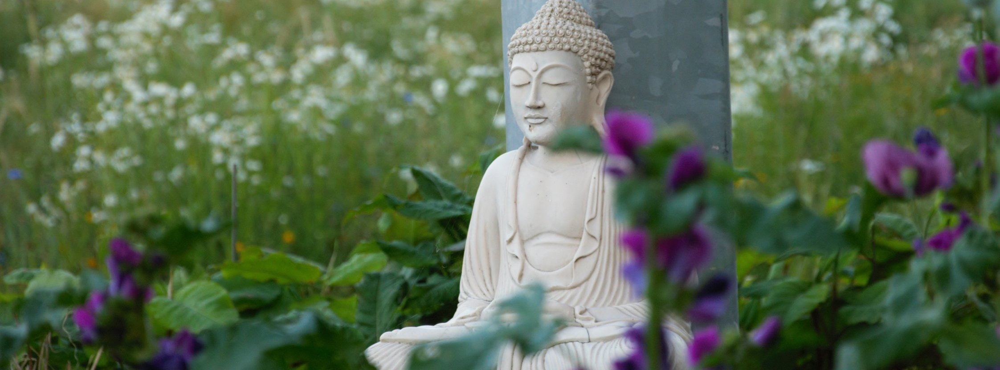

Welkom bij Boeddhistisch Centrum Utrecht
Over ons
Het Boeddhistisch Centrum Utrecht biedt een gastvrije ruimte om in contact te komen met de Dharma - de leer van de Boeddha.
Hier verkennen we een andere, betekenisvolle en vervullende manier van leven, geworteld in vriendelijkheid en gewaarzijn.
Het is een perspectief dat iedereen uitnodigt, ongeacht achtergrond of overtuiging, om een meer compassievolle en gebalanceerde
benadering van het leven te ontdekken.
Je hoeft geen boeddhist te zijn om met ons te mediteren. Onze deuren staan open voor iedereen. In de geest van
ehipassiko (een Sanskriet woord dat “Kom en ervaar het voor jezelf" betekent) nodigen we je uit om deel te nemen.
Het Boeddhistisch Centrum Utrecht streeft ernaar het hart te zijn van een levendige, gastvrije gemeenschap van praktiserende
boeddhisten van alle leeftijden. We zijn trots om deel uit te maken van de Triratna boeddhistische gemeenschap, een internationale beweging met centra in meer dan 20 landen.
Onze benadering van het boeddhisme is inclusief en toegankelijk, en is geschikt voor iedereen die spirituele groei zoekt in de
gehaaste wereld van vandaag.
Andere Triratna centra
Als je Triratna wil ontdekken in andere steden, zijn hier enkele links naar andere boeddhistische centra te vinden:Activiteiten
We bieden om de zondagavond begeleide meditaties aan. De deuren gaan om 19:00 uur open en de meditatie begint stipt om 19:15 uur. De meditaties duren tussen de 30 en 40 minuten, gevolgd door thee en koekjes voor iedereen die wil blijven om een praatje te maken.- 9 november 2025, 19:00 uur
- 23 november 2025, 19:00 uur
- 7 december 2025, 19:00 uur
- 21 december 2025, 19:00 uur
We kijken ernaar uit je te verwelkomen!
Ga op retraite
Wil je je beoefening verdiepen in een retraiteomgeving? Een boeddhistische retraite biedt je de
mogelijkheid om even afstand te nemen van de drukte van het dagelijks leven, zodat je je kan
losmaken van externe afleidingen en je echt op jezelf kunt richten. Door ruimte te creëren
die vrij is van de hectiek van het alledaagse bestaan, kan je je ontspannen, resetten en jezelf
openstellen voor een dieper gevoel van rust en helderheid.
Speciaal uitgelicht
Ben je benieuwd naar meditatie en Boeddhisme? Wil je ontdekken hoe deze eeuwenoude tradities je kunnen helpen om meer rust, focus en balans in je leven te brengen? Doe dan mee aan de Introductieretraite in Metta Vihara van 14 t/m 16 november, waarin je op een toegankelijke manier kennis leert maken met de basisprincipes van meditatie en de essentie van het Boeddhisme. Er is ruimte voor vragen en reflectie.Voor meer informatie en om je aan te melden, bezoek de website van Metta Vihara. 
Retraitecentra van Triratna
- Metta Vihara (Hengstdijk, Zeeland) retraiteprogramma
- Boeddhawierde (Usquert, Groningen) retraiteprogramma
- Op retraite gaan in andere landen
Bronnen
- Verzameling van gratis Dharma-lezingen: Free Buddhist Audio
- Boeken van Triratna: Windhorse Publications
- Filmpjes en podcasts: The Buddhist Centre YouTube-kanaal
Steun ons
Ons centrum wordt gerund door vrijwilligers. Donaties helpen ons de ruimte te blijven huren en meditaties aan te bieden.
We ontvangen graag donaties in de vorm van 'dāna', wat staat voor het boeddhistische principe van vrijgevigheid.
Dit betekent dat er geen vaste prijs is voor deelname aan onze activiteiten. Iedereen betaalt alleen wat ze uit eigen
vrijgevigheid willen bieden. Als jij ons ook wilt steunen kun je tijdens het bezoeken van onze meditaties geld in de
donatiebox doen, of de QR-code scannen die wij daar tonen.
Wij hebben een lijst met gesuggereerde dāna per avond opgesteld. Dit betekent dus niet dat dit het bedrag is dat je moet doneren,
maar het is een richtlijn die je kunt gebruiken. De suggesties zijn bedacht met de intentie dat degene met meer draagkracht ervoor
kan zorgen dat degene die minder te besteden heeft ook kan deelnemen. Voel je je alstublieft altijd vrij om minder of meer te geven.
De suggesties zijn als volgt:
- €5 - korting
- €7 - regulier
- €10 - gul
Contact
Neem gerust contact met ons op als je vragen of suggesties hebt. Je kunt ons bereiken door een e-mail te sturen aan utrechtbuddhistcentre@gmail.com, of door gewoon eens langs te komen bij een van onze meditatie avonden.
Routebeschrijving
Oudegracht 328 Aan de Werf, Utrecht We bevinden ons op slechts 15-20 minuten lopen of 5 minuten fietsen van Utrecht Centraal. De meditatieruimte bevindt zich beneden aan de werf. Om daar te komen kun je de trap naar beneden nemen.